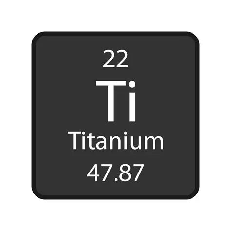
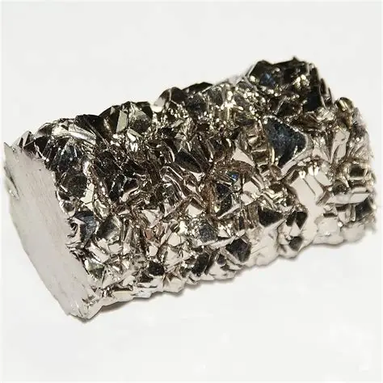

Titânio
Estado físico: sólido.
Coloração: cinza-prateado.
Ponto de fusão: 1668 °C
Ponto de ebulição: 3287 °C
Densidade: 4,5 g/cm³
Isótopos: Ti46, Ti47, Ti48, Ti49 e Ti50
Propriedades: dúctil, refratário, resistente à corrosão, apresenta resistência mecânica, estabilidade térmica e baixa reatividade, além de sua biocompatibilidade e não toxicidade.

História da descoberta
Foi descoberto pelo inglês William Gregor em 1791 e seu nome, derivado do grego titans, foi atribuído posteriormente por Martin Heinrich Klaproth.
Em 1791, o mineralogista inglês William Gregor descobriu, na Cornualha, uma areia preta magnética que continha um novo óxido. Ele percebeu que poderia se tratar de um elemento ainda desconhecido e chamou o material de “menaccanita”, em referência ao local da descoberta.
Em 1795, o químico alemão Martin Klaproth estudou o mesmo óxido e identificou sua relação com um novo elemento, que chamou de titânio, em homenagem aos Titãs da mitologia grega.
Posteriormente, a descoberta de Gregor foi reconhecida. Assim, o titânio passou de um mineral pouco conhecido a um elemento oficialmente reconhecido pela ciência.

Fonte: https://pt.haibowellti.com/info/the-discoverer-of-titanium-17673592065664000.html
Ocorrência na natureza
O Titânio é o nono elemento mais abundante no planeta e é encontrado na crosta terrestre em minérios, como o rutilo (TiO₂) e a Ilmenita (FeTiO₃). Por isso, a mineração é o principal método de obtenção desse metal.
O dióxido de Titânio (TiO₂) é um dos principais compostos desse elemento, sendo utilizado como agente clareador.
A principal forma de obtenção de titânio se dá pelo processo Kroll, que é transformação da ilmenita ou do rutilo em TiCl₄ pela ação de Cl₂ em altas temperaturas (800 °C a 900 °C), na presença de coque (carbono), com subsequente redução a Ti por ação do magnésio:
TiO₂ + 2 C + 2 Cl₂ → TiCl₄ + 2 CO
TiCl₄ + 2 Mg → Ti + 2 MgCl₂
Uso no cotidiano
Médico: O Titânio é utilizado em diversos dispositivos médicos e implantes, como instrumentos cirúrgicos, articulações artificiais e implantes dentários, devido à sua biocompatibilidade e resistência à corrosão.
Industrial: O Titânio é usado em aplicações industriais como processamento químico, geração de energia e exploração de petróleo e gás, onde sua resistência à corrosão e resistência são essenciais.
Produtos de consumo: O Titânio é encontrado em uma variedade de produtos de consumo, incluindo equipamentos esportivos, joias, relógios e óculos, onde sua durabilidade e estética são valorizadas.
Automotivo: O Titânio é usado em veículos de alto desempenho e carros de corrida devido às suas propriedades de leveza e resistência.
Importância ou riscos
Importância biológica: Ele é um material biocompatível, apresentando boa tolerância com o organismo, sendo utilizado como material para implantes como próteses e implantes dentários.
Importância econômica: Sendo o nono elemento mais abundante da crosta terrestre e um dos mais usados em diversas áreas (quase nunca na sua forma pura), o titânio é muito importante economicamente, devido a suas diversas características positivas, como sua leveza, resistência mecânica, resistência a corrosão, estabilidade térmica, baixa reatividade, baixa toxicidade e biocompatibilidade.
Impacto ambiental: Após a extração, os minérios (a ilmenita e o rutilo) passam por processos químicos para obter o titânio, sendo o processo Kroll um dos principais métodos utilizados na produção do metal.
A extração e produção do titânio podem causar impactos ambientais, como desmatamento, destruição de habitats, erosão do solo e poluição da água. Além disso, sua produção exige muita energia e gera emissões de dióxido de carbono e resíduos químicos.
Toxicidade: Sua forma sólida usada para Implantes, ASTM F136, joias, utensílios de cozinha possui praticamente zero de toxicidade, tanto que é biocompatível sendo 100% Bioinert e seguro para o corpo humano.
Riscos à saúde: Em sua forma sólida não apresenta riscos à saúde, no entanto, o dióxido de Titânio (TiO₂), um composto do Titânio utilizado como pigmento branco pode ser discutível e potencialmente nocivo se inalado ou ingerido sob a forma de nanopartículas (EFSA). Já o pó de Titânio industrial presente em fábricas apresenta perigo profissional, provocando irritação pulmonar grave; requerindo proteção respiratória.
Cuidados necessários em sua utilização: Sendo o maior momento de risco do Titânio, a sua extração, produção e manuseio em fábricas, é importante utilizar equipamentos de proteção individual (EPIs) para evitar acidentes e contato com partículas ou substâncias químicas.
Os principais EPIs são: luvas de proteção, óculos de segurança, máscara ou respirador, protetor auricular e roupas de proteção.
Fontes consultadas
Prisma pedagógico - Titânio: Propriedades, Aplicações e Importância.
https://pp.cidesp.com.br/titanio
ARTIZONO - Produção de Titânio: Por Que Extrair o Metal Milagroso da Indústria Aeroespacial Requer um Curso de Obstáculos Químicos.
https://artizono.com/pt_br/compreensao-do-impacto-ambiental-da-producao-de-titanio/
MACHINEMFG - Compreender o impacto ambiental da produção de titânio: Um guia baseado em dados.
https://shop.machinemfg.com/pt/environmental-impact-of-titanium-production/
HonTitan - O titânio é tóxico? O melhor guia de segurança (Implantes, jóias e utensílios de cozinha).
http://hontitan.com/pt/is-titanium-toxic/
Toda matéria - Titânio (Ti): o que é, para que serve e dados do metal.
https://www.todamateria.com.br/titanio/
Brasil Escola - Titânio (Ti).
Professores
Allan Vidal
Professor responsável pela disciplina PW2.

Elaine
Professora responsável pela disciplina de Química.
Criador da página
João Breno Da Silva Dourado
2°DS A
Criador da página.